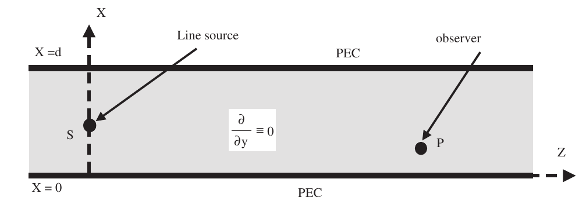
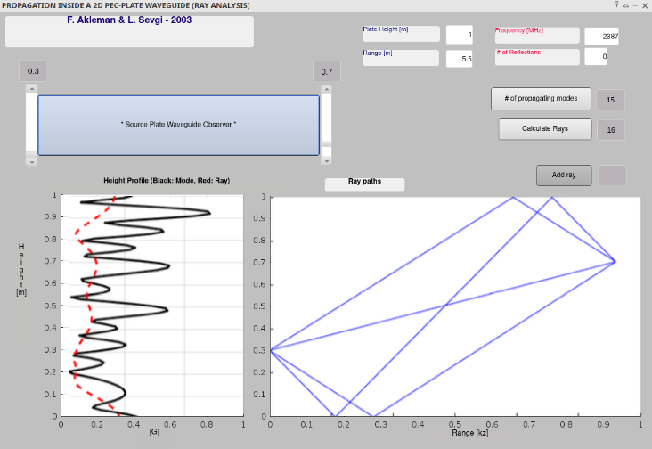
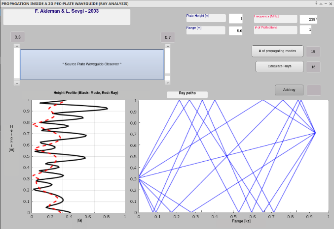
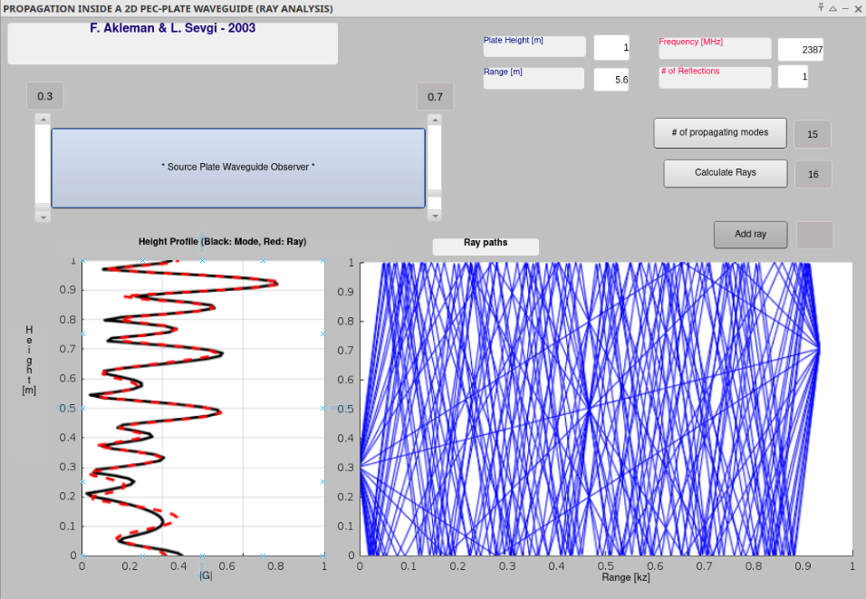
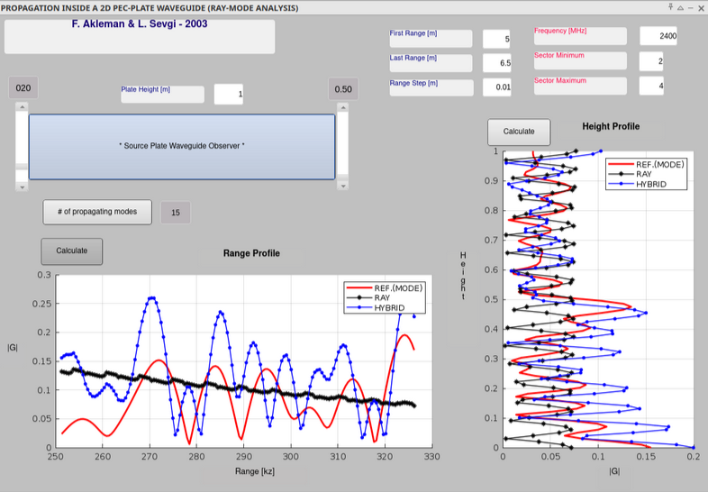
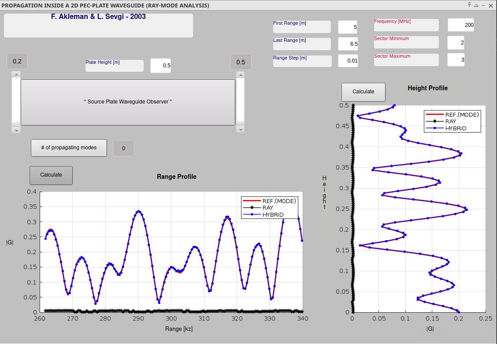
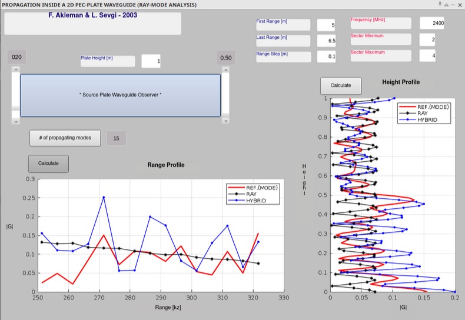
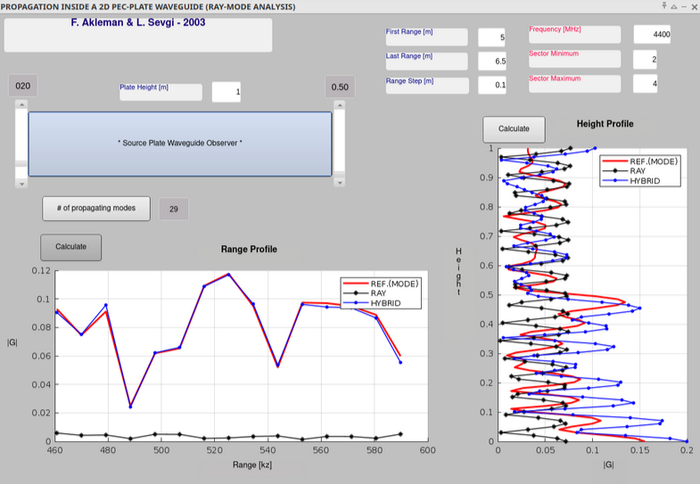

file_data
| file_name | final_project.pdf |
| author | Kanak Pal |
| course | ECE555 |
| date | 13DEC2024 |
1
Mathematical Background: SLPs
The Sturm-Liouville Problem (SLP) is a type of boundary value problem in mathematics that involves a second-order linear differential equation of a specific form, along with boundary conditions. These problems arise in various areas of physics and engineering, such as the study of vibrating strings, heat conduction, and quantum mechanics. The SLP formula typically takes the form shown below:
\(\frac{d}{dx} \left[ p(x) \frac{dy}{dx} \right] + q(x)y + \lambda w(x) y = 0 \)
In addition to the equation itself, the SLP is comprised of several constituents that characterize its utility.
\(\frac{d}{dx} \left[ p(x) \frac{dy}{dx} \right] + q(x)y + \lambda w(x) y = 0 \)
In addition to the equation itself, the SLP is comprised of several constituents that characterize its utility.
- y(x) is the unknown function.
- p(x), q(x), and w(x) are known functions of x.
- λ is a parameter (often called the eigenvalue).
- The equation is defined on an interval [a,b].
- Boundary conditions are specified at the endpoints x=a and x=b. These boundary conditions typically involve the function y(x) and its derivative y′(x).
2
Structure of Green's Functions
Green's Functions (GFs) are useful because they exploit both the properties of linearity as well as the concept of the delta function. The intuition behind GFs is perhaps best elucidated when analyzing the electric potential at a particular point within a charged space; the equation takes the form:
\(-\nabla^2 \phi = \frac{\rho}{\varepsilon_0} \)
- \(-\nabla^2 \): Laplacian Operator (inverted as per convention) that represents the divergence of the gradient. This is essentially that rate of change of the gradient, summed up for the unmixed dimensions of the space, shown below: \( \Delta f = -\nabla^2 f = \sum_{i=1}^{n} \frac{\partial^2 f}{\partial x_i^2} \)
- \( \phi\): electric potential as a function of location (in many cases the location of interest is represented by the variable x)
- \( \rho\): charge density within the region
- \(\varepsilon_0\): Permittivity of the space, essentially a scaling factor, and treated as a constant
Conflation of \(\xi\) to x as V \(\rightarrow\) 0

At a volume space of nearly 0, \(\xi\) must be infiniteseimally close to x such that it alludes to x itself and is unit differentiable. The utility of the delta function is that the act of integration over a domain results in unity in all cases, despite the fact that the function value asymptotically reaches \(\infty\). A simplificaion that can be made to the integral is understanding that the integration over the entire real space is unnecessary, as only the region D encloses pertinent values and establishes the bounds of the charge contributions from the surrounding particles. Thus, the only part that contributes to charge is within region D, and assuming x and \(\xi\) are both enclosed in D, we now have:
\(
\rho(x) = \int_{D} \rho(\xi) \delta(x - \xi) \, d\xi\), where \( \int_{D} \delta(x - \xi)d\xi \) = 1, and thus \(\rho (\xi) \) serves as a scaling factor to represent the magnitude of charge at that point in space and nowhere else. The region D is cleverly chosen in 3D space as a uniform sphere, and this ensures symmetry of the charge distribution over the region; the symmetry of which is also inherited by the electrical potential. In many circumstances, the Green's functions that are being evaluated may be present in previously tabulated formats that allow for convenient use of the function. Equiped with the Green's function, one need only evaluate for the remaining scalar value (impulse or activation), such as \(\rho (x)\). However, complications arise when identifying a unique solution because GFs do not always provide a single, valid output. In many cases, GFs must be accompanied with boundary conditions that restrict the type of acceptable shapes that may emerge from a solution achieved through GFs. Conventionally, the boundary condition such that \(\phi(\mathbf{x}) \rightarrow 0 \text{ as } |\mathbf{x}| \rightarrow \infty\) is sufficient enough to produce one output that satisfies Poisson's Equation, which happens to be
\(
\frac{G(\mathbf{x}; \boldsymbol{\xi})}{\varepsilon_0} = \frac{1}{4 \pi \varepsilon_0 |\mathbf{x} - \boldsymbol{\xi}|}
\)
in this particular case. However, GFs become unwiedly when applied to a non-homogenous case, such as a cube with no potential on 5 faces but a positive potential at one of the faces. In this particular case where the GF does not evaluate to 0 on a boundary and encounter a vanishing property, the third property of Green's Identities may be useful in providing supplication for the non-homogenous case.
3
Helmholtz Equation and Waveguides
Green's functions are a useful tool for characterizing wave propagation in various scenarios, including inside a two-dimensional perfectly electrically conducting (PEC) parallel-plate waveguide. They essentially provide a way to calculate the field at any point within the waveguide due to a source at any other point. Consider the waveguide problem, which consists of two perfectly conducting plates separated by a distance a. The waveguide is assumed to be infinite in the z-direction. The equation that governs the wave propogation in many general cases is the Helmholtz equation, which serves as the simplest eigenvalue equation that characterizes the system in 2D. As mentioned earlier, systems that are solvable via GFs typically posses boundary conditions, and the PEC Waveguide problem features boundary conditions such that the tangential components of the electric field and the normal component of the magnetic field are zero at the waveguide walls. It is important to note that the Helmholtz equation can be entirely derived from Maxwell's equations, specifically the third and fourth equations (Faraday's Law of Induction and Ampere's Law with Maxwell's addition, respectively). In order to derive the Helmholtz equation, the curl of the electric field is matched with the equation for the curl of the magnetic field in such a way where the wave equation renders out only in terms of the electric field as shown: \( \nabla^2 \mathbf{E}(\mathbf{r}) + k^2 \mathbf{E}(\mathbf{r}) = 0 \), and it should be noted here that the same can be done for determining the source contribution of the magnetic component following a similar derivation process. It is important to note that this describes a source free system with no free charges or input currents. It is also restricted to time-harmonic systems ("time-harmonic" means that something varies sinusoidally with time at a specific frequency such as a pure tone in sound or a single-wavelength light wave). Taking the Laplacian also means that each Cartesian component of E or B will satsify the scalar version of the Helmholtz equation, as the Laplacian operator stratifies and characterizes each dimension (x, y, and z) separately in the form: \(\nabla^2 \psi + k^2 \psi = -f\), where \(\psi\) represents any Cartesian component of E (or B if the equation has been derived to evaluate a magnetic field). Equipped with knowledge of rendering second order differentiable systems with GFs, we now arrive at GF representation of the Helmholtz Equation here: \(\nabla^2 G(\mathbf{x}, \mathbf{x}') + k^2 G(\mathbf{x}, \mathbf{x}') = -\delta(\mathbf{x} - \mathbf{x}') \).
PEC Waveguide

This format renders the Helmholtz equation integratable over an appropriate interval. The predicament with the representation of the Helmholtz equation without the Green's function conversion is that it requires you to know the source function f explicitly. This can be limiting if you want to analyze the system's response to various sources or if the source is complicated.This can be limiting if when analyzing the system's response to various sources or if the source is complicated. Additionally, incorporating boundary conditions directly into the Helmholtz equation can be challenging, as is the case when managing complex geometries.The GF mitigates the added complexity of a specified source function by restricting the source to a single point to allow the Helmholtz equation to be solved with data pertinent only to the point source located at \(\xi\). Because GFs allow for superposition, analyzing another point source at a different location, which ostensibly results in a new value for the electric potential (as mentioned in in Section 2), will simply require cumulative addition to all other point sources that are contained within the domain of the analytic region. Prior to moving further along with the current trajectory of discussion, we must deviate briefly to discuss the relevance of implementing waveguides into a physical communication protocol. For all communication streams transmitted via some waveform, whether it be radiofrequency, light, or higher frequency signals, the receiver of the signal will encounter the signal at reduced potency. Waveguides serve as an apparatus to conserve the energy carried to the receiver by a transmitted wave. Two points of consideration are "mode profiles" (the location of the source within the waveguide) and "dispersion" (alteration of pitch, distortion of the original wave input). The objectives of analyzing waveguides are to identify the transfer function (how it alters the magnitude and phase shift of the input wave signal) and the shape of the wave propagating through the waveguide. A redner of a waveguide made of a perfect electrical conductor (PEC) is shown below in Figure 2. Returning to the case of the Helmoholtz equation, we note that the relationship between the Laplacian of the wave function and the "eigenvalue" renders the equation as an eigenvalue problem. Recall that an eigenvalue problem presents itself as \(L\psi = λ\psi\), and the source-free Helmoholtz equation can be shown as \(\nabla^2 \psi = -k^2 \psi \) when arranged in such a fashion. In the context of the Helmholtz equation, the eigenvalues (-k²) are related to the frequencies or modes of vibration that are allowed in the system. For example, in acoustics, the eigenvalues might correspond to the resonant frequencies of a room or a musical instrument. The eigenfunctions (ψ) represent the spatial patterns associated with those frequencies or modes. They describe the shape of the wave or vibration at a particular frequency. Solving the Helmholtz equation often involves finding the eigenvalues and eigenfunctions of the Laplacian operator for a given set of boundary conditions. This is because the eigenfunctions form a complete set, meaning that any solution to the Helmholtz equation can be expressed as a linear combination of these eigenfunctions. The Helmholtz equation, being an eigenvalue problem with potentially many solutions, is thus accompanied with the concept of boundary conditions as it exists within the class of SLPs. The denotations for boundary conditions for Helmholtz equations are referred to as Dirichlect and Neumann boundary conditions, and refer to "fixed value at the boundary" and "fixed flux or flow rate across the boundary" respectively. The solutions to the Helmholtz equation depend crucially on the boundary conditions of the problem. These boundary conditions represent the physical constraints on the wave, such as the shape of a room, the properties of a waveguide, or the potential energy landscape in quantum mechanics. The following exposition will review a MATLAB module for the calculation of wave field as a function of height at a given range in terms of mode summation.
3
Eigenray and Eigenmode Representations
In the work directed by Felsen, a mathematical aproach to solving the wave equation was developed for a perfectly conducting parallel-plate waveguide for high frequency systems. Two representations of wave propogation through a cavity (in this case, PEC parallel-plate waveguide) are desribed in the paper: eigenmode and eigenray representations. Each serves as as distinct approache to describing wave propagation and they offer different perspectives and have different strengths and weaknesses. In the case of the eigenmode representation, the following characteristics are listed:
- Eigenbasis: The eigenmode elucidates the natural modes of vibration or oscillation of a system. They appropriate the solutions to the homogeneous wave equation (e.g., the Helmholtz equation) with the appropriate boundary conditions.
- Superposition: In the eigenmode representation, the total field is expressed as a superposition (sum) of these eigenmodes, each with its own amplitude and phase.
- Advantages: natural modes (captures the natural resonances and oscillations of the system), orthogonality(analysis becomes simple when dealing with orthogonal eigenbases), completeness(all wave functions can be representated by a linear combination of eigenmodes)
- Disadvantages: Complex geometries are difficult to represent, and high frequency representations are not accurately characterized
- Rays: Ray paths are drawn out from energy sources to determine propogation mechanics
- Superposition: In the eigenray representation, the total field is expressed as a sum of contributions from different eigenrays that have undergone multiple reflections and refractions within the system.
- Advantages: intuitive and visually receptive, complex geometries can be more easily characterized, and high frequencies are represented more easily when wave behavior is more ray-like and when the effect of dispersion is minimized
- Disadvantages: Low frequency diffraction and interference effects are difficult to represent, and ray convergence can result in singularities.
4
RAY-GUI
The wave propogation simulation using RAY-GUI implements a number of features to visually indicate raytraces within the
waveguide cavity. It requires user input parameters in order to represent the propogation characteristics; the required parameters, their and Felsen parameters are provided below.
| Parameter | Description | Default Felsen Value |
|---|---|---|
| plate height | distance between top and bottom plate of the waveguide | 1 m |
| source height | height of transmitted wave within the waveguide (vertical axis) | 0.3 m |
| observer height | height of wave receiver within the waveguide (vertical axis) | 0.7 m |
| range | analytic region of the waveguide simulation (horizontal axis) | 5.6 m |
| reflections | number of permitted reflections from waveguide walls permitted in the simulation | 0 |
| frequency | initial frequency of the wave | 2387 MHz |
RAY-GUI parameters
It must be noted that for ray tracing, the underlying method in RAY-GUI, is based on the approximation that waves travel in straight lines (rays) when the wavelength is much smaller than the features of the environment. The frequency of the wave affects the validity of this approximation. At lower frequencies (longer wavelengths), diffraction effects become more pronounced, and the ray approximation becomes less accurate. The following figures below present the outcomes of altering the reflections parameters that ultimately allows for a number of ray traces which can be used to predict the location of a propogated element .
RAY-GUI, # of reflections: 0

Inspection of Figure 3 clearly indicates that setting a reflection parameter of 0 results in sparse wave propogation characteristics within the waveguide cavity. Rays represent the paths of wave energy. By having rays cover the entire cavity, you capture all possible paths that the wave energy can take as it propagates and reflects off the waveguide walls. This ensures that you account for all contributions to the field at any point within the cavity. The field at any point in the cavity is determined by the superposition (sum) of the contributions from all rays passing through that point. If the rays don't cover the entire cavity, you might miss some contributions, leading to an inaccurate field calculation. Covering the entire cavity with rays ensures that we are able to identify all such regions of contributions from multiple energy incidents from reflected rays at a (u,v) coordinate within the waveguide. Thus, in order to obtain an accurate representatino of the field, we increase the number of reflections, similarly performed in the Felsen paper. The updated simulations are presented in the following figures.
RAY-GUI, # of reflections: 1

RAY-GUi, # of reflections: 6

Inspection of Figure 4 and Figure 5 show that the wave propogations evaluated at an increased number of reflections results in much higher ray densities which contribute to accurate spatial energy approximations due to the acknowledgement of overlaps among the energy carrying rays within the waveguide. In the context of eigenray analysis, when a field is represented as a function of height, it means that the strength or amplitude of the field varies with the vertical position within the waveguide or cavity. The field strength and it's characteristics are captured by the height profile plot to the right. Field strength variation exists (as a function of height in this case) within the cavity because eigenrays, which represent paths of wave energy, typically undergo multiple reflections at the boundaries of the waveguide or cavity and the height of a ray within the structure changes as it propagates and reflects. Because the height profile plot provides a visual representation of how the field strength changes with height, it can reveal standing wave patterns (in some cases, the height profile might exhibit a standing wave pattern due to the interference of upward and downward traveling rays), mode shapes (the height profile can provide insights into the shapes of the modes that are excited within the structure), and field strength variations (reveas the height dependent variance of the field strength which can be important for understanding the overall wave behavior). In a simple parallel-plate waveguide, the height profile might show a sinusoidal variation, with peaks and nulls corresponding to the constructive and destructive interference of rays reflecting between the top and bottom plates. Other changes in parameters, such as altering plate height, will results in visual alterations (in this case, a flat, horizontal resitriction of the wave patter to fit within the limited height allowance).
5
HYBRID-GUI
The interface for the HYBRID-GUI module is similar to that used
previously in the RAY-GUI module, however, raytraces are not provided; instead, height dependent and range dependent energy field distributions are provided and populate with data upon completing the simulation. We note here that the mathematical foundation for the HYBRID-MODE simulation is to add mode values and ray values when present at a particular point of interest, characterized as x:
\( \begin{aligned} g(x, z, x', z') &= \sum_{m=0}^{M_1} G_m(\text{LOM}) + \sum_{n=N_1}^{N_2} G_n(\text{rays}) \\ &\quad + \sum_{l=M_2}^{M_3} G_l(\text{HOM}) + \text{Remainder}. \end{aligned} \)
We note that equation accounts for lower order modes as well as higher order modes, the values of which are bounded by mode indices and serve to stratify mode regions for computational efficiency as well as truncate beyond the upper bound of the higher order mode index. The authors present two approaches of automating the simulation, the first requiring specification of the eigenray quantity, and using the algorithm to add lower order modes, and higher order modes automatically, and the second requiring sector specification. Ultimately the goal of the system is to provide a solution to the Green's function that evaluates the energy between the wave origin point (x,z) and the target spatial coordinate (x',z'). The HYBRID-GUI investigation and analysis is provided in the following figures and concluding remarks of this section.
\( \begin{aligned} g(x, z, x', z') &= \sum_{m=0}^{M_1} G_m(\text{LOM}) + \sum_{n=N_1}^{N_2} G_n(\text{rays}) \\ &\quad + \sum_{l=M_2}^{M_3} G_l(\text{HOM}) + \text{Remainder}. \end{aligned} \)
We note that equation accounts for lower order modes as well as higher order modes, the values of which are bounded by mode indices and serve to stratify mode regions for computational efficiency as well as truncate beyond the upper bound of the higher order mode index. The authors present two approaches of automating the simulation, the first requiring specification of the eigenray quantity, and using the algorithm to add lower order modes, and higher order modes automatically, and the second requiring sector specification. Ultimately the goal of the system is to provide a solution to the Green's function that evaluates the energy between the wave origin point (x,z) and the target spatial coordinate (x',z'). The HYBRID-GUI investigation and analysis is provided in the following figures and concluding remarks of this section.
| Parameter | Description | Default Felsen Value |
|---|---|---|
| plate height | distance between top and bottom plate of the waveguide | 1 m |
| source height | height of transmitted wave within the waveguide (vertical axis) | 0.2 m |
| observer height | height of wave receiver within the waveguide (vertical axis) | 0.5 m |
| first range | lower bound region of the horizontal analysis domain | 5 m |
| last range | upper bound region of the horizontal analysis domain | 6.5 |
| range increments | step size of field calculation when traversing the horizontal axis. Increased performance with reduced step size | 0.01 |
| sector minimum | sector of angular spectrum to fix for lower order modes bound (eigenrays are automatically added within the mode bandwidth) | 2 |
| sector maximum | sector of angular spectrum to fix for higher order modes bound (eigenrays are automatically added within the mode bandwidth) | 4 |
| frequency | initial frequency of the wave | 2400 MHz |
HYBRID-GUI parameters
The figures below make modifications to default the parameters that were initially set in the Felsen paper to show the dynamics of the field properties when variables are changed (egregiously, in some scenarios here, to emphasize the complications in edge cases). Figure 6 shows the simulation when performed at the conditions presented in Table 2. We noted earlier that rays do not behave well at lower frequency conditions, and so the simulation output in Figure 7 attemps to introduce conditions that induce misbehavior that the algorithm must contend with. It is evident from the simulation results the HYBRID-GUI representation outperforms the RAY-GUI results (as it internally utilizes a mode-based representation to evaluate the low frequency condition
of the starting wave). It also shows that the inherent calculation in the low-frequency condition is accompanied with fewer numbers of propogated modes (in this instance, 0 propogated modes are discovered due to a very low frequency). In the HYBRID-GUI simulation, the number of propagating modes refers to how many distinct wave patterns (modes) are included in the calculation to represent the wave traveling through the waveguide. Each mode has an inherent cutoff frequency, and if the wave's frequency is below this cutoff, that mode cannot travel and rapidly diminishes. The higher the frequency of your wave, the more modes can exist because more modes will have cutoff frequencies below that operating frequency. Following this logic, Figure 8 presents a significanly augmented frequency value in the simulation to twice it's nominal value as it appears in the Felsen simulation. We note here that the number of propogating modes is significantly higher, indicating that there may be increased calculation and computation requirements in order to accurate evaluate a solution. Our next venture is to observe the accuracy disparities after manipulation of the step size. Figure 8 presents the reduction of step size, and the calculation was processed significantly faster. We also note that the ray mode calculations are fairly inaccurate, and in some cases, are not bounded in any conceivable way. Another investigation is performed for a higher frequency with the same step size, and notice that the number of propogated modes increases (to account for more dispersion effects at lower frequency conditions because the wave has more bandwidth within which to attenuate), although reduced accuracy along the horizontal axis of the waveguide, which is perhaps due to the eigenmode calculations of the algorithm failing at higher frequencies while not having a significant enough step size to produce correct calculations over the bounded region. Please refer to the end of the document as the code utliized in the Felsen paper for the rendering of the figures is maintained within the appendix section in Figure A.1 and implemented for the convenience of the reader
Hybrid GUI, default parameters

Hybrid GUI, low frequency

Hybrid GUI, reduced step size

Hybrid GUI, reduced step size, high frequency

6
Conclusion
Both HYBRID-GUI and RAY-GUI are graphical user interfaces designed for analyzing wave propagation, but they employ different underlying techniques and offer distinct advantages and limitations. We note that altering the frequencies of the origin waves influences the number of propogation events and results in increased accuracy for RAY-GUI (as rays tend to behave well in this paradigm at high frequencies). We observe that increasing the range length of the wavguide requires increased computational demand and incurs some degree of inaccuracy in the both HYBRID and RAY output profiles when compared to the reference profile. When altering the step sizes and frequency values for the model, we note that the calculation proceeds faster although there exists a clear shifting phenomenon for the HYBRID GUI. In the case of the RAY GUI performance, accuracy drops along the horizontal axis although remains somewhat relevant when inspecting the height profile. We note that loweing the frequency values of the source wave significantly impacts the RAY-GUI model, preventing it from accurately simulating the ray paths and thus the energy field values. Not shown in the figures, although present in external investigation, we note that altering the plate height dimensions does impact the HYBRID-GUI output. The plate height directly affects the cutoff frequency, as the cutoff frequency increases with decreasing plate height, and vice versa. In the case of the RAY-GUI, altering the plate height changes the spatial distance of the individual eigneray paths and their overlap regions, which directly changes the field calculation. Ultimately, if plate height is small, and only a few modes can propagate, the ray-tracing approximation in RAY-GUI might become less accurate. Based on the insight gained from the packages, the authors of the original work indicate that inhomogenous conditions might be feasibly modeled using the algorithm and that waveguides with virtual boundaries may be supported with extensions to the codebase.
Appendix
MATLAB module for the calculation of wave field as a
function of height at a given range in terms of mode summation.
/assets/code/module_1.txtAppendix
MATLAB module for the calculation of eigenrays and their field contributions for given source/receiver locations
/assets/code/module_2.js